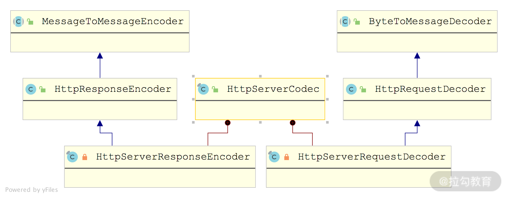

- 00 开篇词 深入掌握 Dubbo 原理与实现，提升你的职场竞争力.md.html
- 01 Dubbo 源码环境搭建：千里之行，始于足下.md.html
- 02 Dubbo 的配置总线：抓住 URL，就理解了半个 Dubbo.md.html
- 03 Dubbo SPI 精析，接口实现两极反转（上）.md.html
- 04 Dubbo SPI 精析，接口实现两极反转（下）.md.html
- 05 海量定时任务，一个时间轮搞定.md.html
- 06 ZooKeeper 与 Curator，求你别用 ZkClient 了（上）.md.html
- 07 ZooKeeper 与 Curator，求你别用 ZkClient 了（下）.md.html
- 08 代理模式与常见实现.md.html
- 09 Netty 入门，用它做网络编程都说好（上）.md.html
- 10 Netty 入门，用它做网络编程都说好（下）.md.html
- 11 简易版 RPC 框架实现（上）.md.html
- 12 简易版 RPC 框架实现（下）.md.html
- 13 本地缓存：降低 ZooKeeper 压力的一个常用手段.md.html
- 14 重试机制是网络操作的基本保证.md.html
- 15 ZooKeeper 注册中心实现，官方推荐注册中心实践.md.html
- 16 Dubbo Serialize 层：多种序列化算法，总有一款适合你.md.html
- 17 Dubbo Remoting 层核心接口分析：这居然是一套兼容所有 NIO 框架的设计？.md.html
- 18 Buffer 缓冲区：我们不生产数据，我们只是数据的搬运工.md.html
- 19 Transporter 层核心实现：编解码与线程模型一文打尽（上）.md.html
- 20 Transporter 层核心实现：编解码与线程模型一文打尽（下）.md.html
- 21 Exchange 层剖析：彻底搞懂 Request-Response 模型（上）.md.html
- 22 Exchange 层剖析：彻底搞懂 Request-Response 模型（下）.md.html
- 23 核心接口介绍，RPC 层骨架梳理.md.html
- 24 从 Protocol 起手，看服务暴露和服务引用的全流程（上）.md.html
- 25 从 Protocol 起手，看服务暴露和服务引用的全流程（下）.md.html
- 26 加餐：直击 Dubbo “心脏”，带你一起探秘 Invoker（上）.md.html
- 27 加餐：直击 Dubbo “心脏”，带你一起探秘 Invoker（下）.md.html
- 28 复杂问题简单化，代理帮你隐藏了多少底层细节？.md.html
- 29 加餐：HTTP 协议 + JSON-RPC，Dubbo 跨语言就是如此简单.md.html
- 30 Filter 接口，扩展 Dubbo 框架的常用手段指北.md.html
- 31 加餐：深潜 Directory 实现，探秘服务目录玄机.md.html
- 32 路由机制：请求到底怎么走，它说了算（上）.md.html
- 33 路由机制：请求到底怎么走，它说了算（下）.md.html
- 34 加餐：初探 Dubbo 动态配置的那些事儿.md.html
- 35 负载均衡：公平公正物尽其用的负载均衡策略，这里都有（上）.md.html
- 36 负载均衡：公平公正物尽其用的负载均衡策略，这里都有（下）.md.html
- 37 集群容错：一个好汉三个帮（上）.md.html
- 38 集群容错：一个好汉三个帮（下）.md.html
- 39 加餐：多个返回值不用怕，Merger 合并器来帮忙.md.html
- 40 加餐：模拟远程调用，Mock 机制帮你搞定.md.html
- 41 加餐：一键通关服务发布全流程.md.html
- 42 加餐：服务引用流程全解析.md.html
- 43 服务自省设计方案：新版本新方案.md.html
- 44 元数据方案深度剖析，如何避免注册中心数据量膨胀？.md.html
- 45 加餐：深入服务自省方案中的服务发布订阅（上）.md.html
- 46 加餐：深入服务自省方案中的服务发布订阅（下）.md.html
- 47 配置中心设计与实现：集中化配置 and 本地化配置，我都要（上）.md.html
- 48 配置中心设计与实现：集中化配置 and 本地化配置，我都要（下）.md.html
- 49 结束语 认真学习，缩小差距.md.html
- 捐赠
11 简易版 RPC 框架实现（上）
这是“基础知识”部分的最后一课时，我们将会运用前面介绍的基础知识来做一个实践项目 —— 编写一个简易版本的 RPC 框架，作为“基础知识”部分的总结和回顾。
RPC 是“远程过程调用（Remote Procedure Call）”的缩写形式，比较通俗的解释是：像本地方法调用一样调用远程的服务。虽然 RPC 的定义非常简单，但是相对完整的、通用的 RPC 框架涉及很多方面的内容，例如注册发现、服务治理、负载均衡、集群容错、RPC 协议等，如下图所示：
简易 RPC 框架的架构图
本课时我们主要实现RPC 框架的基石部分——远程调用，简易版 RPC 框架一次远程调用的核心流程是这样的：
- Client 首先会调用本地的代理，也就是图中的 Proxy。
- Client 端 Proxy 会按照协议（Protocol），将调用中传入的数据序列化成字节流。
- 之后 Client 会通过网络，将字节数据发送到 Server 端。
- Server 端接收到字节数据之后，会按照协议进行反序列化，得到相应的请求信息。
- Server 端 Proxy 会根据序列化后的请求信息，调用相应的业务逻辑。
- Server 端业务逻辑的返回值，也会按照上述逻辑返回给 Client 端。
这个远程调用的过程，就是我们简易版本 RPC 框架的核心实现，只有理解了这个流程，才能进行后续的开发。
项目结构
了解了简易版 RPC 框架的工作流程和实现目标之后，我们再来看下项目的结构，为了方便起见，这里我们将整个项目放到了一个 Module 中了，如下图所示，你可以按照自己的需求进行模块划分。
那这各个包的功能是怎样的呢？我们就来一一说明。
- protocol：简易版 RPC 框架的自定义协议。
- serialization：提供了自定义协议对应的序列化、反序列化的相关工具类。
- codec：提供了自定义协议对应的编码器和解码器。
- transport：基于 Netty 提供了底层网络通信的功能，其中会使用到 codec 包中定义编码器和解码器，以及 serialization 包中的序列化器和反序列化器。
- registry：基于 ZooKeeper 和 Curator 实现了简易版本的注册中心功能。
- proxy：使用 JDK 动态代理实现了一层代理。
自定义协议
当前已经有很多成熟的协议了，例如 HTTP、HTTPS 等，那为什么我们还要自定义 RPC 协议呢？
从功能角度考虑，HTTP 协议在 1.X 时代，只支持半双工传输模式，虽然支持长连接，但是不支持服务端主动推送数据。从效率角度来看，在一次简单的远程调用中，只需要传递方法名和加个简单的参数，此时，HTTP 请求中大部分数据都被 HTTP Header 占据，真正的有效负载非常少，效率就比较低。
当然，HTTP 协议也有自己的优势，例如，天然穿透防火墙，大量的框架和开源软件支持 HTTP 接口，而且配合 REST 规范使用也是很便捷的，所以有很多 RPC 框架直接使用 HTTP 协议，尤其是在 HTTP 2.0 之后，如 gRPC、Spring Cloud 等。
这里我们自定义一个简易版的 Demo RPC 协议，如下图所示：
在 Demo RPC 的消息头中，包含了整个 RPC 消息的一些控制信息，例如，版本号、魔数、消息类型、附加信息、消息 ID 以及消息体的长度，在附加信息（extraInfo）中，按位进行划分，分别定义消息的类型、序列化方式、压缩方式以及请求类型。当然，你也可以自己扩充 Demo RPC 协议，实现更加复杂的功能。
Demo RPC 消息头对应的实体类是 Header，其定义如下：
public class Header {
private short magic; // 魔数
private byte version; // 协议版本
private byte extraInfo; // 附加信息
private Long messageId; // 消息ID
private Integer size; // 消息体长度
... // 省略getter/setter方法
}
确定了 Demo RPC 协议消息头的结构之后，我们再来看 Demo RPC 协议消息体由哪些字段构成，这里我们通过 Request 和 Response 两个实体类来表示请求消息和响应消息的消息体：
public class Request implements Serializable {
private String serviceName; // 请求的Service类名
private String methodName; // 请求的方法名称
private Class[] argTypes; // 请求方法的参数类型
private Object[] args; // 请求方法的参数
... // 省略getter/setter方法
}
public class Response implements Serializable {
private int code = 0; // 响应的错误码，正常响应为0，非0表示异常响应
private String errMsg; // 异常信息
private Object result; // 响应结果
... // 省略getter/setter方法
}
注意，Request 和 Response 对象是要进行序列化的，需要实现 Serializable 接口。为了让这两个类的对象能够在 Client 和 Server 之间跨进程传输，需要进行序列化和反序列化操作，这里定义一个 Serialization 接口，统一完成序列化相关的操作：
public interface Serialization {
<T> byte[] serialize(T obj)throws IOException;
<T> T deSerialize(byte[] data, Class<T> clz)throws IOException;
}
在 Demo RPC 中默认使用 Hessian 序列化方式，下面的 HessianSerialization 就是基于 Hessian 序列化方式对 Serialization 接口的实现：
public class HessianSerialization implements Serialization {
public <T> byte[] serialize(T obj) throws IOException {
ByteArrayOutputStream os = new ByteArrayOutputStream();
HessianOutput hessianOutput = new HessianOutput(os);
hessianOutput.writeObject(obj);
return os.toByteArray();
}
public <T> T deSerialize(byte[] data, Class<T> clazz)
throws IOException {
ByteArrayInputStream is = new ByteArrayInputStream(data);
HessianInput hessianInput = new HessianInput(is);
return (T) hessianInput.readObject(clazz);
}
}
在有的场景中，请求或响应传输的数据比较大，直接传输比较消耗带宽，所以一般会采用压缩后再发送的方式。在前面介绍的 Demo RPC 消息头中的 extraInfo 字段中，就包含了标识消息体压缩方式的 bit 位。这里我们定义一个 Compressor 接口抽象所有压缩算法：
public interface Compressor {
byte[] compress(byte[] array) throws IOException;
byte[] unCompress(byte[] array) throws IOException;
}
同时提供了一个基于 Snappy 压缩算法的实现，作为 Demo RPC 的默认压缩算法：
public class SnappyCompressor implements Compressor {
public byte[] compress(byte[] array) throws IOException {
if (array == null) { return null; }
return Snappy.compress(array);
}
public byte[] unCompress(byte[] array) throws IOException {
if (array == null) { return null; }
return Snappy.uncompress(array);
}
}
编解码实现
了解了自定义协议的结构之后，我们再来解决协议的编解码问题。
前面课时介绍 Netty 核心概念的时候我们提到过，Netty 每个 Channel 绑定一个 ChannelPipeline，并依赖 ChannelPipeline 中添加的 ChannelHandler 处理接收到（或要发送）的数据，其中就包括字节到消息（以及消息到字节）的转换。Netty 中提供了 ByteToMessageDecoder、 MessageToByteEncoder、MessageToMessageEncoder、MessageToMessageDecoder 等抽象类来实现 Message 与 ByteBuf 之间的转换以及 Message 之间的转换，如下图所示：
Netty 提供的 Decoder 和 Encoder 实现
在 Netty 的源码中，我们可以看到对很多已有协议的序列化和反序列化都是基于上述抽象类实现的，例如，HttpServerCodec 中通过依赖 HttpServerRequestDecoder 和 HttpServerResponseEncoder 来实现 HTTP 请求的解码和 HTTP 响应的编码。如下图所示，HttpServerRequestDecoder 继承自 ByteToMessageDecoder，实现了 ByteBuf 到 HTTP 请求之间的转换；HttpServerResponseEncoder 继承自 MessageToMessageEncoder，实现 HTTP 响应到其他消息的转换（其中包括转换成 ByteBuf 的能力）。

Netty 中 HTTP 协议的 Decoder 和 Encoder 实现
在简易版 RPC 框架中，我们的自定义请求暂时没有 HTTP 协议那么复杂，只要简单继承 ByteToMessageDecoder 和 MessageToMessageEncoder 即可。
首先来看 DemoRpcDecoder，它实现了 ByteBuf 到 Demo RPC Message 的转换，具体实现如下：
public class DemoRpcDecoder extends ByteToMessageDecoder {
protected void decode(ChannelHandlerContext ctx,
ByteBuf byteBuf, List<Object> out) throws Exception {
if (byteBuf.readableBytes() < Constants.HEADER_SIZE) {
return; // 不到16字节的话无法解析消息头，暂不读取
}
// 记录当前readIndex指针的位置，方便重置
byteBuf.markReaderIndex();
// 尝试读取消息头的魔数部分
short magic = byteBuf.readShort();
if (magic != Constants.MAGIC) { // 魔数不匹配会抛出异常
byteBuf.resetReaderIndex(); // 重置readIndex指针
throw new RuntimeException("magic number error:" + magic);
}
// 依次读取消息版本、附加信息、消息ID以及消息体长度四部分
byte version = byteBuf.readByte();
byte extraInfo = byteBuf.readByte();
long messageId = byteBuf.readLong();
int size = byteBuf.readInt();
Object request = null;
// 心跳消息是没有消息体的，无须读取
if (!Constants.isHeartBeat(extraInfo)) {
// 对于非心跳消息，没有积累到足够的数据是无法进行反序列化的
if (byteBuf.readableBytes() < size) {
byteBuf.resetReaderIndex();
return;
}
// 读取消息体并进行反序列化
byte[] payload = new byte[size];
byteBuf.readBytes(payload);
// 这里根据消息头中的extraInfo部分选择相应的序列化和压缩方式
Serialization serialization =
SerializationFactory.get(extraInfo);
Compressor compressor = CompressorFactory.get(extraInfo);
// 经过解压缩和反序列化得到消息体
request = serialization.deserialize(
compressor.unCompress(payload), Request.class);
}
// 将上面读取到的消息头和消息体拼装成完整的Message并向后传递
Header header = new Header(magic, version, extraInfo,
messageId, size);
Message message = new Message(header, request);
out.add(message);
}
}
接下来看 DemoRpcEncoder，它实现了 Demo RPC Message 到 ByteBuf 的转换，具体实现如下：
class DemoRpcEncoder extends MessageToByteEncoder<Message>{
@Override
protected void encode(ChannelHandlerContext channelHandlerContext,
Message message, ByteBuf byteBuf) throws Exception {
Header header = message.getHeader();
// 依次序列化消息头中的魔数、版本、附加信息以及消息ID
byteBuf.writeShort(header.getMagic());
byteBuf.writeByte(header.getVersion());
byteBuf.writeByte(header.getExtraInfo());
byteBuf.writeLong(header.getMessageId());
Object content = message.getContent();
if (Constants.isHeartBeat(header.getExtraInfo())) {
byteBuf.writeInt(0); // 心跳消息，没有消息体，这里写入0
return;
}
// 按照extraInfo部分指定的序列化方式和压缩方式进行处理
Serialization serialization =
SerializationFactory.get(header.getExtraInfo());
Compressor compressor =
CompressorFactory.get(header.getExtraInfo());
byte[] payload = compressor.compress(
serialization.serialize(content));
byteBuf.writeInt(payload.length); // 写入消息体长度
byteBuf.writeBytes(payload); // 写入消息体
}
}
总结
本课时我们首先介绍了简易 RPC 框架的基础架构以及其处理一次远程调用的基本流程，并对整个简易 RPC 框架项目的结构进行了简单介绍。接下来，我们讲解了简易 RPC 框架使用的自定义协议格式、序列化/反序列化方式以及压缩方式，这些都是远程数据传输不可或缺的基础。然后，我们又介绍了 Netty 中的编解码体系，以及 HTTP 协议相关的编解码器实现。最后，我们还分析了简易 RPC 协议对应的编解码器，即 DemoRpcEncoder 和 DemoRpcDecoder。
在下一课时，我们将自底向上，继续介绍简易 RPC 框架的剩余部分实现。
简易版 RPC 框架 Demo 的链接：https://github.com/xxxlxy2008/demo-prc 。
© 2019 - 2023 Liangliang Lee. Powered by gin and hexo-theme-book.